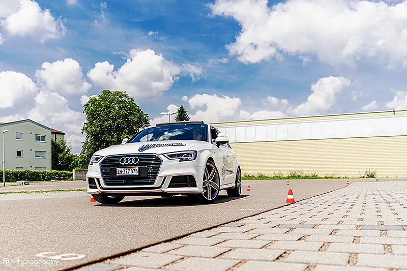
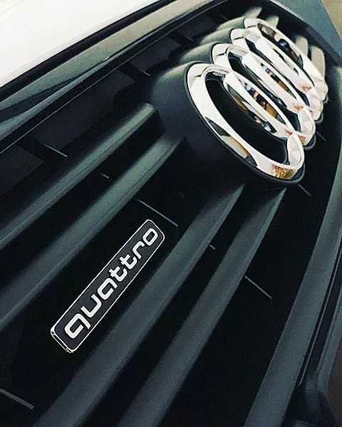
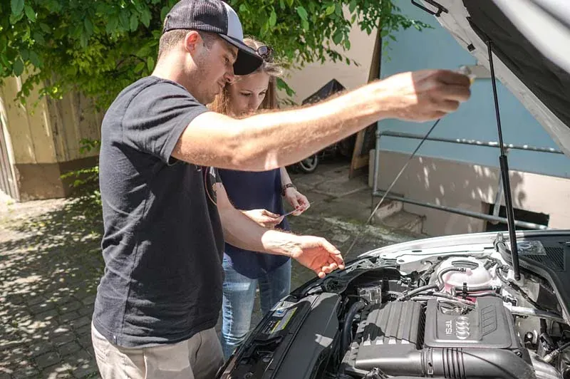
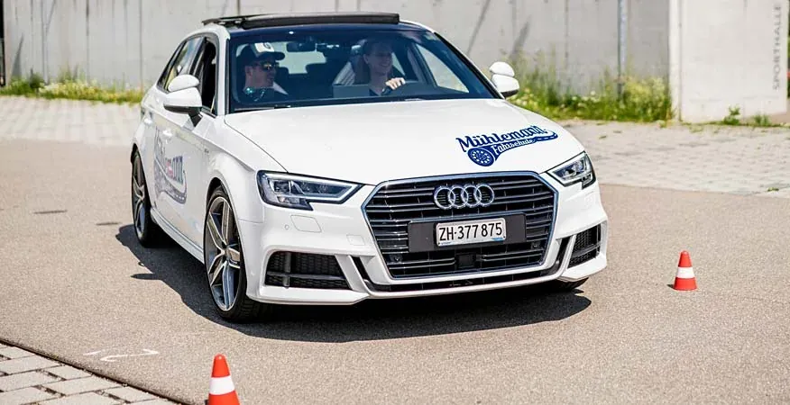

Handschaltung
Audi A3 Sportback 1.4 TFSI, S-Line
- Getriebe
- 6-Gang Handschaltung
- Leistung
- 150 PS
- Jahrgang
- 2017
«Ideal für Neulenkerinnen und Neulenker, da es auch den einen oder anderen Fehler in der Bedienung verzeiht.»
Stefan Mühlemann bringt Ihnen in Pfäffikon ZH das Autofahren bei, mit Handschaltung oder Automat, mit Einfühlungsvermögen und pädagogischem Geschick.
Treffpunkt Bahnhof Pfäffikon beim Migrolino
01Porträt
Die Begeisterung für Autos und das Fahren war stets ein Teil meines Lebens. Da war der Entscheid, Automechaniker zu werden, ein logischer Schritt. Nach der vierjährigen Lehre arbeitete ich vier Jahre in zwei Garagen, bei SAAB und bei HONDA.
«Ich wollte aber mehr, vor allem mehr mit Menschen zusammenarbeiten.»
Von 2006 bis 2007 liess ich mich zum Fahrlehrer ausbilden. Seit Januar 2007 führe ich mit Freude meine eigene Fahrschule in Pfäffikon ZH. In den Fahrstunden ist mir wichtig, dass Sie sich wohl fühlen und Spass beim Lernen haben. Die Qualität der Ausbildung steht dabei immer im Vordergrund.
In der Freizeit: Surfen, Kraft- und Ausdauertraining, Fotografie.
02Fahrzeuge


Handschaltung
«Ideal für Neulenkerinnen und Neulenker, da es auch den einen oder anderen Fehler in der Bedienung verzeiht.»
Automat
«Das ist mein neues Schmuckstück. Spass ist garantiert!»
Beide Autos sind in Form, Cockpit und Armaturen gleich.
Wer zwischen Handschaltung und Automat wechselt, soll sich nach dem Umstieg sofort vertraut fühlen. Übrigens: Seit Februar 2019 gibt es den Automateneintrag nicht mehr. Wer nur Automat fährt, kann von Anfang an damit beginnen. Wer auch Handschaltung fahren wird, lernt das am besten in der Fahrschule.
Fahrzeuge03In der Fahrstunde
Die Ausbildung ist in vier Blöcke aufgeteilt, von der Vorschulung über Grund- und Hauptschulung bis zur Perfektionsschulung. Dazu gehören alle Manöver, vom Parkieren bis zum Bergsichern.
«Es liegt mir am Herzen, dass Sie nebst dem Lernerfolg auch Freude am Fahren haben.»


04Angebot und Preise
Mit dem Abo fahren Sie 10 Lektionen für CHF 850.–, das sind CHF 40 weniger als 10 Einzellektionen.
Den WAB-Kurs, die obligatorische Weiterbildung nach der Prüfung, gibt Stefan Mühlemann als Instruktor an der Transportschule in Pfäffikon ZH.
05Der Weg zum Führerschein
Den Lernfahrausweis der Kategorie B gibt es ab 17 Jahren. Wer jünger als 20 ist, fährt danach 12 Monate mit dem Lernfahrausweis, bevor die Prüfung möglich ist.
Sie lernen, eine Notfallsituation einzuschätzen und richtig zu helfen.
Mit dem Gesuch beim Strassenverkehrsamt. Lernen können Sie mit der theorie24 VIP-Card am PC oder Smartphone.
Obligatorisch für die Anmeldung zur Prüfung, möglich ab dem Lernfahrausweis. Im eigenen Theorielokal in Pfäffikon ZH.
Fahrstunden mit Handschaltung oder Automat, Schritt für Schritt bis zur Prüfungsreife.
Bringen Sie Ihre Begleitperson regelmässig in den Unterricht mit. So passen privates Üben und Fahrstunden zusammen.
Die Anmeldung übernimmt Ihr Fahrlehrer. Danach gilt der Führerausweis auf Probe für 3 Jahre.
Die obligatorische Weiterbildung innert 12 Monaten, auch bei Stefan Mühlemann an der Transportschule in Pfäffikon ZH.
Unterwegs in
Treffpunkt
Bahnhof Pfäffikon, beim Migrolino
Falls es mir möglich ist, kann ich Sie auch im Umkreis von Pfäffikon abholen.
Theorielokal
Barzloostrasse 9, Pfäffikon ZH
Hier findet der Verkehrskundeunterricht statt.
Adresse
Schulstrasse 15, 8330 Pfäffikon ZH
Termine nach Vereinbarung.
06Kontakt
Rufen Sie an oder schreiben Sie mir auf WhatsApp. Termine gibt es nach Vereinbarung, Treffpunkt ist der Bahnhof Pfäffikon beim Migrolino. Ich begleite Sie gerne auf Ihrem Weg zum Führerschein.
Stefan Mühlemann